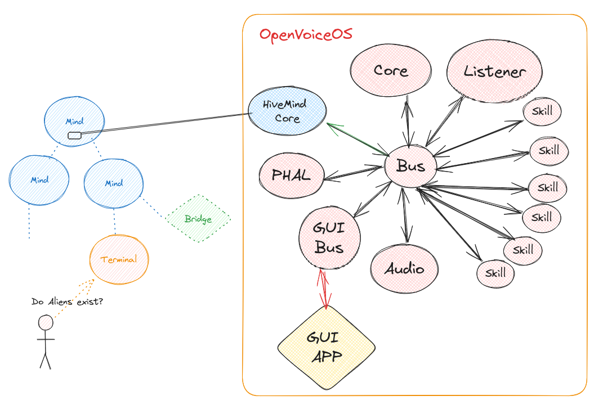

OpenVoiceOS Skills Server
Hivemind-core is the reference integrations with OpenVoiceOS

💡 For a minimal install you only need
hivemind-core,ovos-coreandovos-messagebus
Install
pip install hivemind-core
Usage
Everything is done via the hivemind-core command, see pairing for more info
$ hivemind-core --help
Usage: hivemind-core [OPTIONS] COMMAND [ARGS]...
Options:
--help Show this message and exit.
Commands:
add-client add credentials for a client
allow-msg allow message types sent from a client
delete-client remove credentials for a client
list-clients list clients and credentials
listen start listening for HiveMind connections
$ hivemind-core listen --help
Usage: hivemind-core listen [OPTIONS]
start listening for HiveMind connections
Options:
--host TEXT HiveMind host
--port INTEGER HiveMind port number
--ssl BOOLEAN use wss://
--cert_dir TEXT HiveMind SSL certificate directory
--cert_name TEXT HiveMind SSL certificate file name
--db-backend [redis|json|sqlite]
Select the database backend to use. Options:
redis, sqlite, json.
--db-name TEXT [json/sqlite] The name for the database
file. ~/.cache/hivemind-core/{name}
--db-folder TEXT [json/sqlite] The subfolder where database
files are stored. ~/.cache/{db_folder}}
--redis-host TEXT [redis] Host for Redis. Default is
localhost.
--redis-port INTEGER [redis] Port for Redis. Default is 6379.
--redis-password TEXT [redis] Password for Redis. Default None
--help Show this message and exit.
Why HiveMind?
HiveMind offers a decentralized solution for OVOS, with features such as secure communication, device integration, and protocol transparency. Here's what it brings to the table:
-
HiveMind as an OVOS Add-on
Start with OVOS by installing ovos-core, or use a Mycroft device. Then, runhivemind-coreto enable HiveMind functionality. This transforms your OVOS node into a connected system with the "brain" of HiveMind. -
Decentralizing OVOS-Core
With HiveMind, thin clients like the voice satellite can connect without running full OVOS software. This allows for multiple access points (e.g., microphones across your home) while keeping the core in a central location. -
Encrypted Communication
HiveMind supports SSL-encrypted communication, eliminating the need for manual certificate management. It auto-generates self-signed certificates for secure, encrypted connections between devices. -
MessageBus Authentication & Security
HiveMind enforces authentication for the message bus, ensuring only authorized clients can connect. This enhances privacy and prevents unauthorized access, unlike traditional setups where the message bus is open. -
Exposing OVOS to the Web Safely
HiveMind can expose your OVOS instance securely over the web. By using the Flask chatroom template, you can interact with OVOS remotely while maintaining privacy and security. -
Protocol for Integration
HiveMind allows integration with external platforms like Android, Mattermost, or Twitch. Whether you want to turn OVOS into a chatbot or integrate it with other services, HiveMind provides the protocol for seamless interaction.
Key Features & Setup
- HiveMind in Action:
- Devices Connecting: Install the HiveMind CLI and register with your OVOS node to connect devices across your network.
- Decentralization: Use lightweight devices like Raspberry Pi with HiveMind to extend OVOS functionality across rooms.
- Encryption & Authentication: Safely transmit data over SSL, with built-in encryption and message authentication.
- Web Exposure: Use HiveMind’s secure web interface to interact with OVOS remotely.
- Chat Integrations: Install bridges like the HackChat or Mattermost bridges to bring OVOS to chat platforms.
By leveraging HiveMind's features, you can transform OVOS into a flexible, decentralized, and secure platform, capable of handling a wide variety of use cases and integrations.